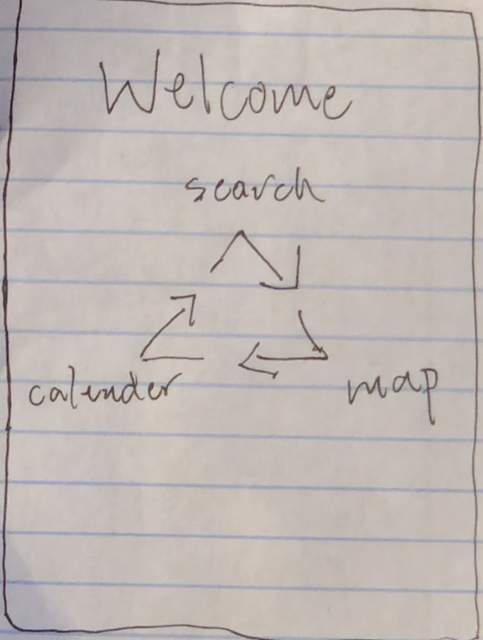
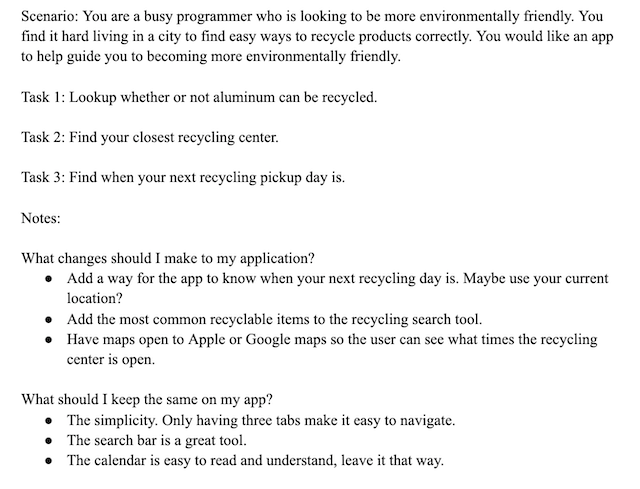

Problem Statment: Recycling

Figuring out what can and can’t be recycled is time-consuming and confusing.
Affinity Diagram: Recycling

I throughly researched with my group all encompassing ideas of recycling.
Persona: 3 Personas for Recycling App

3 personas for users needing a sorting recyclables app.
Storyboard: Samantha

Storyboard showcasing the usefullness of a recycling app.
Sketch: Recycling

Potential app solutions for a recycling app.
Paper Prototype: Recycling
Functioning prototype of our app on paper which can be used to generate ideas.
Usibility Testing: Recycling
A scanrio with tasks that show the usibility outcome of the app.